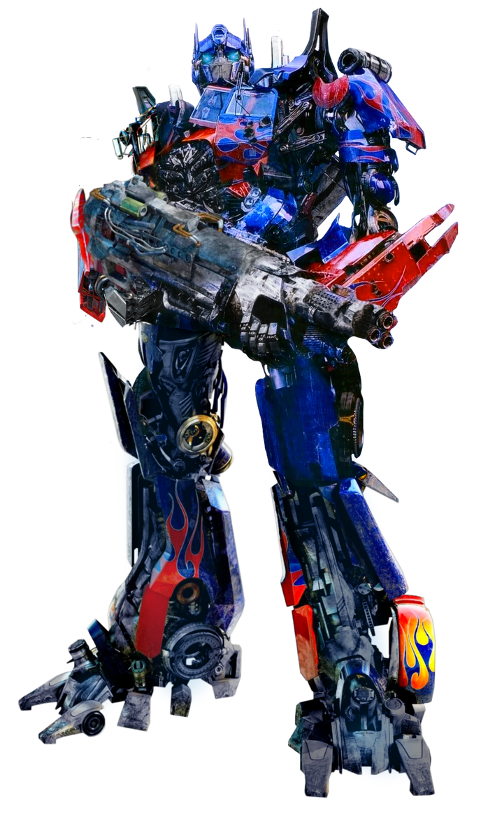
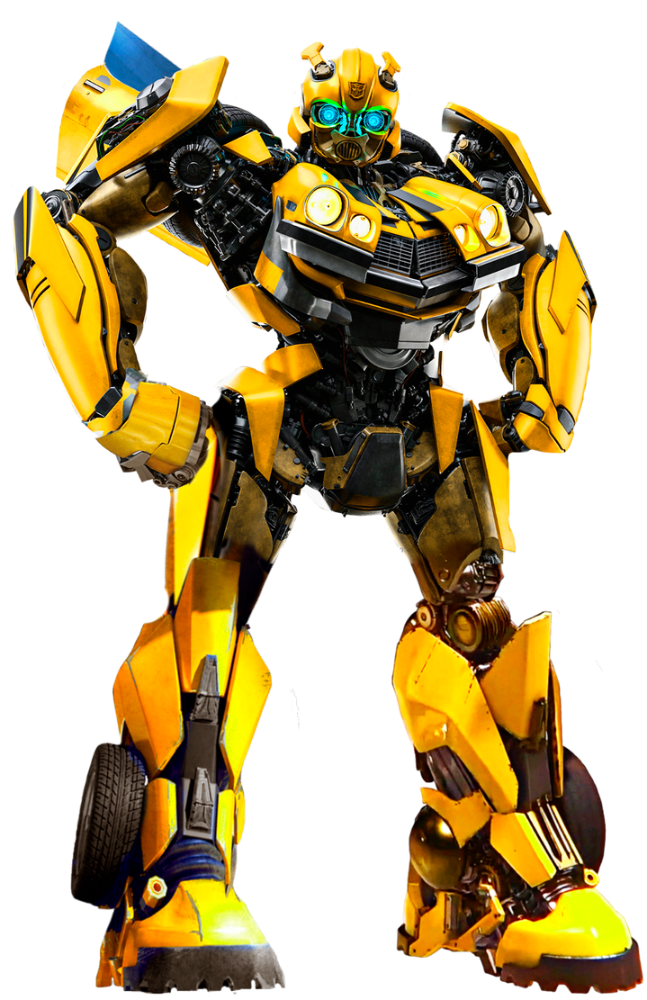

Optimus Prime

The reason I think that Optimus Prime would be a good leader for our country is that he is considered to be a beacon of hope.
A lot of people are familar with this character and what he stands for, as well as viewing him as a good choice to lead our nation.
Also this reason isn't as important but his color scheme is red and blue, like our flag, making him a visual representation of our country.
Finally, he is a robot that transforms(get it)into a truck! That is awesome!
Bio
In the Transformer's story, Optimus Prime, also known as Orion Pax, embodies strong moral values, exceptional leadership,
and strategic prowess. Equipped with advanced weaponry and martial arts skills, he champions justice and peaceful coexistence with humans.
As the bearer of the Matrix of Leadership, he leads the Autobots, engaged in an eternal conflict against the Decepticons.
Originating from the ancient Dynasty of Primes, Optimus Prime's selfless sacrifice and rallying cry of "Till All are One" were pivotal in defeating Unicron.
Reborn as Orion Pax, he embraced his new identity, only to reclaim his role as Optimus Prime to confront the Decepticons led by his former friend, Megatron, igniting the Great War on Cybertron.
While his origins and persona may vary across different storylines, this depiction remains consistent throughout iterations of the Transformers universe.
Content found at Wikipedia
Possible Running Mate

I picked bumblebee as a possible running mate for Optimus Prime because he is usually seen as the right hand or sidekick.
In almost every iterations of Transformers media, bumblebee is known to follow Optimus Prime and will fight for his causes.
A little less of an important reason, bumblebee is my favorite character from Transformers because of the movie.
Campaign Platform